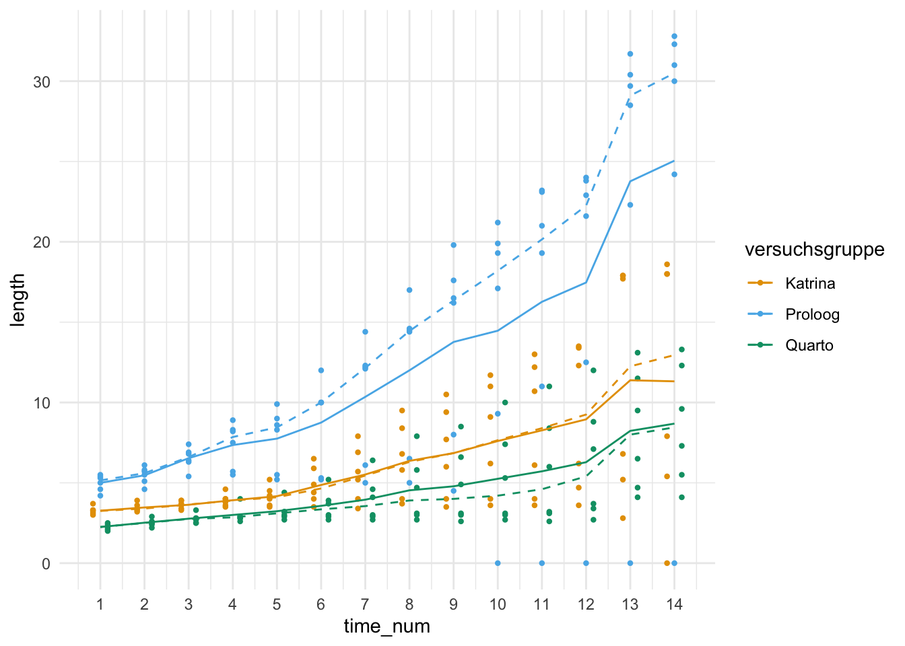

pacman::p_load(tidyverse, magrittr, conflicted, broom, quantreg,
see, performance, emmeans, multcomp, janitor,
parameters, effectsize, MASS, modelsummary)
conflict_prefer("select", "dplyr")
conflict_prefer("filter", "dplyr")
conflict_prefer("mutate", "dplyr")
cbbPalette <- c("#000000", "#E69F00", "#56B4E9", "#009E73",
"#F0E442", "#0072B2", "#D55E00", "#CC79A7")47 Robust und Quantile Regression
Version vom July 18, 2023 um 13:30:49
“All models are approximations. Essentially, all models are wrong, but some are useful. However, the approximate nature of the model must always be borne in mind.” — George E. P. Box
In diesem Kapitel geht es um zwei Arten der Regression, die immer wieder genannt werden, aber dennoch eine Art Nischendasein fristen. Zum einen möchte ich hier die robuste Regression (eng. robust regression) und zum anderen die Quantilsregression (eng. quantile regression) vorstellen. Die robuste Regression ist faktisch statistisch tot. Das heißt, die Implementierungen werden kaum weiterentwickelt und auch findet methodische Forschung nur in der theoretischen Nische statt. Zwar wird die robuste Regression in ihrer ursprünglichen Form als Regression angewendet, aber das reicht meistens nicht. Selten wollen wir nur durch ein paar Punkte eine Gerade ziehen und uns über das gute Modell erfreuen. Wir haben mit dem Modell meist mehr vor. Wir wollen eine ANOVA rechnen und dann auch einen wie auch immer gearteten Mittelwertsvergleich. Wenn dies zwar theoretisch möglich ist, praktisch aber nicht implementiert, dann wollen und können wir die Methoden nur eingeschränkt verwenden. Bei der Quantilsregression sieht es etwas anders aus, hier können wir dann schon den ein oder anderen Mittelwertsvergleich rechnen. Was bei der Quantilsregression eher problematisch ist, ist das das Modell nicht immer konvergiert oder aber nicht algorithmisch eine Lösung für einen spezifischen Datensatz findet. In diesem Datensatz dann den einen Grund zu finden, ist dann meist so aufwendig, dass wir es auch gleich mit der Quantilsregression lassen können.
Der Charme der Quantilesregression ist ja am Ende, dass wir auch den Median als Quantile auswählen können. So haben wir dann die Möglichkeit eine Regression auf den Medianen zu rechnen. Wir vergleichen damit dann auch die Mediane und sind so nicht mehr auf die Normalverteilung unseres Outcomes wie in der gewöhnlichen Regression angewiesen. Also eigentlich eine tolle Sache, wenn wir nur an den Mittelwertsvergleichen interessiert sind. Eine klassische ANOVA geht leider nicht auf einer Medianregression. Eine klassische ANOVA wäre aber mit nicht parametrischen Methoden sowieso nicht möglich gewesen. Wir verlieren also nicht so viel, gewinnen aber etwas, wenn das Modell konvergiert und ein Ergebnis liefert.
In diesem Kapitel brechen wir etwas die bisherige Struktur der Regressionskapitel auf. Wir schauen uns hier zuerst die beiden Modelle an und entscheiden dann, ob wir die Modelle für die ANOVA oder den Gruppenvergleich überhaupt nutzen können. Am Ende vergleichen wir dann einmal alle Modell mit dem fantastische Paket modelsummary mit der gleichnamigen Funktion. Hier hilft dann wie immer die tolle Hilfsseite von modelsummary zu besuchen.
47.1 Genutzte R Pakete
Wir wollen folgende R Pakete in diesem Kapitel nutzen.
Am Ende des Kapitels findest du nochmal den gesamten R Code in einem Rutsch zum selber durchführen oder aber kopieren.
47.2 Daten
Für unser erstes Beispiel nutzen wir die Daten aus einem Wachstumsversuch mit Basilikum mit vier Bodenbehandlungen und vier Blöcken, die Blöcke sind eigentlich Gewächshaustische. Wir wollen also einen klassischen Gruppenvergleich mit Berücksichtigung der Blockstruktur rechnen.
basi_tbl <- read_excel("data/keimversuch_basilikum_block.xlsx") %>%
clean_names() %>%
mutate(versuchsgruppe = as_factor(versuchsgruppe)) %>%
select(versuchsgruppe, block_1:block_4)In Tabelle 47.1 sehen wir einmal die Daten im Wide-Format. Wir haben also das Frischgewicht der Basilikumpflanzen gemessen und wollen wissen, ob die verschiedenen Bodenarten einen Einfluss auf das Wachstum haben.
| versuchsgruppe | block_1 | block_2 | block_3 | block_4 |
|---|---|---|---|---|
| Erde | 16 | 21 | 23 | 23 |
| Erde | 17 | 19 | 18 | 24 |
| Erde | 16 | 22 | 23 | 24 |
| Erde | 9 | 17 | 18 | 21 |
| Erde | 17 | 21 | 22 | 24 |
| Erde+Fließ | 18 | 22 | 21 | 21 |
| … | … | … | … | … |
| Erde+Perlite | 20 | 25 | 25 | 25 |
| Perlite+Fließ | 22 | 25 | 25 | 24 |
| Perlite+Fließ | 25 | 25 | 26 | 26 |
| Perlite+Fließ | 15 | 19 | 19 | 19 |
| Perlite+Fließ | 17 | 22 | 22 | 22 |
| Perlite+Fließ | 22 | 22 | 22 | 22 |
Da wir die Daten im Wide-Format vorliegen haben, müssen wir die Daten nochmal in Long-Format umwandeln. Wie immer nutzen wir dafür die Funktion pivot_longer().
basi_block_tbl <- basi_tbl %>%
pivot_longer(cols = block_1:block_4,
values_to = "weight",
names_to = "block") %>%
mutate(block = as_factor(block))In der Abbildung 47.1 siehst du einmal die Daten als Dotplots mit Mittelwert und Standardabweichung. Wir machen hier mal einen etwas komplizierteren Plot, aber immer nur Barplot ist ja auch langweilig.
ggplot(basi_block_tbl, aes(versuchsgruppe, weight, color = block)) +
theme_bw() +
scale_color_okabeito() +
geom_point(position = position_dodge(0.5), shape = 4, size = 2.5) +
stat_summary(fun.data="mean_sdl", fun.args = list(mult = 1),
geom="pointrange", position = position_dodge(0.5)) +
stat_summary(fun = "mean", fun.min = "min", fun.max = "max", geom = "line",
position = position_dodge(0.5)) 
Unser zweiter Datensatz ist ein Anwendungsdatensatz aus dem Gemüsebau. Wir schauen uns das Wachstum von drei Gurkensorten über siebzehn Wochen an. Die Gurkensorten sind hier unsere Versuchsgruppen. Da wir es hier mit echten Daten zu tun haben, müssen wir uns etwas strecken damit die Daten dann auch passen. Wir wollen das Wachstum der drei Gurkensorten über die Zeit betrachten - also faktisch den Verlauf des Wachstums. Wir ignorieren hier einmal die abhängige Datenstruktur über die Zeitpunkte.
Mit einer abhängigen Datenstruktur müssten wir eigentlich ein lineares gemischtes Modell rechnen. Aber wir nutzen hier die Daten einmal anders.
Im Weiteren haben wir zwei Typen von Daten für das Gurkenwachstum. Einmal messen wir den Durchmesser für jede Sorte (D im Namen der Versuchsgruppe) oder aber die Länge (L im Namen der Versuchsgruppe). Wir betrachten hier nur das Längenwachstum und deshalb filtern wir erstmal nach allen Versuchsgruppen mit einem L im Namen. Am Ende schmeißen wir noch Spalten raus, die wir nicht weiter brauchen.
In der Tabelle 47.2 sehen wir einmal die rohen Daten dargestellt.
| versuchsgruppe | t1 | t2 | t3 | t4 | t5 | t6 | t7 | t8 | t9 | t10 | t11 | t12 | t13 | t14 | t15 | t16 | t17 |
|---|---|---|---|---|---|---|---|---|---|---|---|---|---|---|---|---|---|
| Proloog | 5.5 | 6.1 | 7.4 | 8.9 | 9.9 | 12 | 14.4 | 17 | 19.8 | 21.2 | 23.2 | 24 | 29.7 | 32.8 | NA | NA | NA |
| Proloog | 4.6 | 5.1 | 6.4 | 5.7 | 5.5 | 5.2 | 5 | 5 | 4.5 | 0 | 0 | 0 | 0 | 0 | NA | NA | NA |
| Proloog | 5.3 | 5.8 | 6.8 | 8.3 | 9 | 10 | 12.3 | 14.6 | 17.6 | 19.3 | 23.1 | 23.8 | 31.7 | 32.3 | NA | NA | NA |
| Proloog | 5.4 | 5.7 | 6.9 | 8.2 | 8.6 | 10 | 12.1 | 14.5 | 16.2 | 17.1 | 19.3 | 21.6 | 28.5 | 30 | NA | NA | NA |
| Proloog | 5 | 5.5 | 6.3 | 7.5 | 8.3 | 10 | 12.2 | 14.4 | 16.5 | 19.9 | 21 | 22.9 | 30.4 | 31 | NA | NA | NA |
| Proloog | 4.2 | 4.6 | 5.4 | 5.5 | 5.2 | 5.3 | 6.1 | 6.5 | 8 | 9.3 | 11 | 12.5 | 22.3 | 24.2 | NA | NA | NA |
| … | … | … | … | … | … | … | … | … | … | … | … | … | … | … | … | … | … |
| Katrina | 3.7 | 3.9 | 3.9 | 4 | 4 | 4 | 4 | 4 | 4 | 4 | 4 | 4.7 | 5.2 | 5.4 | 5.3 | 5.4 | 5 |
| Katrina | 3 | 3.2 | 3.3 | 3.5 | 3.6 | 4.4 | 5.2 | 5.8 | 6 | 6.2 | 6.1 | 6.2 | 6.8 | 7.9 | 9.4 | 10.4 | 13.2 |
| Katrina | 3.3 | 3.3 | 3.4 | 3.6 | 3.5 | 3.5 | 3.4 | 3.7 | 3.5 | 3.6 | 3.6 | 3.6 | 2.8 | 0 | NA | NA | NA |
| Katrina | 3.2 | 3.4 | 3.7 | 4 | 4.5 | 5.9 | 6.9 | 8.4 | 9.4 | 11 | 12.2 | 13.5 | 17.9 | 18 | NA | NA | NA |
| Katrina | 3.3 | 3.4 | 3.9 | 4.6 | 5.2 | 6.5 | 7.9 | 9.5 | 10.5 | 11.7 | 13 | 13.4 | 17.9 | 18 | NA | NA | NA |
| Katrina | 3.1 | 3.6 | 3.6 | 3.8 | 4.2 | 4.9 | 5.7 | 6.8 | 7.7 | 9.1 | 10.7 | 12.3 | 17.7 | 18.6 | NA | NA | NA |
Dann müssen wir die Daten noch in Long-Format bringen. Da wir dann auch noch auf zwei Arten die Daten über die Zeit darstellen wollen, brauchen wir einmal die Zeit als Faktor time_fct und einmal als numerisch time_num. Leider haben wir auch Gurken mit einer Länge von 0 cm, diese Gruken lassen wir jetzt mal drin, da wir ja eine robuste Regression noch rechnen wollen. Auch haben wir ab Woche 14 keine Messungen mehr in der Versuchsgruppe Prolong, also nehmen wir auch nur die Daten bis zur vierzehnten Woche.
gurke_time_len_tbl <- gurke_raw_tbl %>%
pivot_longer(cols = t1:t17,
values_to = "length",
names_to = "time") %>%
mutate(time_fct = as_factor(time),
time_num = as.numeric(time_fct)) %>%
filter(time_num <= 14)In der Abbildung 47.2 sehen wir dann nochmal den Scatterplot für das Gurkenwachstum. Die gestrichtelten Linien stellen den Median und die durchgezogene Line den Mittelwert der Gruppen dar.
ggplot(gurke_time_len_tbl, aes(time_num, length, color = versuchsgruppe)) +
theme_bw() +
geom_point() +
stat_summary(fun = "mean", geom = "line") +
stat_summary(fun = "median", geom = "line", linetype = 2) +
scale_color_okabeito()
47.3 Gewöhnliche lineare Regression
(eng. ordinary linear regression)
basi_lm_fit <- lm(weight ~ versuchsgruppe + block + versuchsgruppe:block, basi_block_tbl)emmip(basi_lm_fit, versuchsgruppe ~ block, CIs = TRUE,
cov.reduce = FALSE) +
theme_bw() +
scale_color_okabeito()
47.3.1 ANOVA
basi_lm_fit %>%
anova() %>%
model_parameters()Parameter | Sum_Squares | df | Mean_Square | F | p
----------------------------------------------------------------------
versuchsgruppe | 158.84 | 3 | 52.95 | 6.53 | < .001
block | 355.34 | 3 | 118.45 | 14.60 | < .001
versuchsgruppe:block | 83.51 | 9 | 9.28 | 1.14 | 0.346
Residuals | 519.20 | 64 | 8.11 | |
Anova Table (Type 1 tests)pf(1.14, 9, 64, lower.tail = FALSE)[1] 0.3486254basi_lm_fit %>%
eta_squared()# Effect Size for ANOVA (Type I)
Parameter | Eta2 (partial) | 95% CI
----------------------------------------------------
versuchsgruppe | 0.23 | [0.08, 1.00]
block | 0.41 | [0.24, 1.00]
versuchsgruppe:block | 0.14 | [0.00, 1.00]
- One-sided CIs: upper bound fixed at [1.00].47.3.2 Gruppenvergleich
basi_lm_fit %>%
emmeans(specs = ~ versuchsgruppe | block) %>%
cld(Letters = letters, adjust = "none") block = block_1:
versuchsgruppe emmean SE df lower.CL upper.CL .group
Erde 15.0 1.27 64 12.5 17.5 a
Erde+Perlite 17.2 1.27 64 14.7 19.7 ab
Erde+Fließ 17.2 1.27 64 14.7 19.7 ab
Perlite+Fließ 20.2 1.27 64 17.7 22.7 b
block = block_2:
versuchsgruppe emmean SE df lower.CL upper.CL .group
Erde+Fließ 19.8 1.27 64 17.3 22.3 a
Erde 20.0 1.27 64 17.5 22.5 a
Perlite+Fließ 22.6 1.27 64 20.1 25.1 ab
Erde+Perlite 23.6 1.27 64 21.1 26.1 b
block = block_3:
versuchsgruppe emmean SE df lower.CL upper.CL .group
Erde+Fließ 20.4 1.27 64 17.9 22.9 a
Erde 20.8 1.27 64 18.3 23.3 a
Perlite+Fließ 22.8 1.27 64 20.3 25.3 ab
Erde+Perlite 24.6 1.27 64 22.1 27.1 b
block = block_4:
versuchsgruppe emmean SE df lower.CL upper.CL .group
Erde+Fließ 20.2 1.27 64 17.7 22.7 a
Perlite+Fließ 22.6 1.27 64 20.1 25.1 ab
Erde 23.2 1.27 64 20.7 25.7 ab
Erde+Perlite 25.2 1.27 64 22.7 27.7 b
Confidence level used: 0.95
significance level used: alpha = 0.05
NOTE: If two or more means share the same grouping symbol,
then we cannot show them to be different.
But we also did not show them to be the same. 47.4 Robuste Regression
Bei einer robusten Regression werden jeder Beobachtung auf der Grundlage ihres Residuums unterschiedliche Gewichte (eng. robustness weights) von 0 bis 1 zugewiesen. Wir kennen ja ein Residuum als die Differenz zwischen den beobachteten und den vorhergesagten Werten der Daten. Die vorhergesagten Daten sind ja die Punkte auf der Geraden. Je kleiner also das Residuum ist, desto größer ist die Gewichtung und desto näher liegt eine Beobachtung an der geschätzten Geraden. Wir bestrafen also Punkte, die weit weg von unserer potenziellen Gerade liegen.
Ein englisches Tutorium gibt es dann nochmal ausführlicher unter R demo | Robust Regression (don’t depend on influential data!)
Ebenso liefert auch das Tutorium Robust regression | R data analysis example einen Überblick.
Schauen wir uns das Problem an einem kleinen Spieldatensatz einmal an.
reg_lm_fit <- lm(y ~ x, reg_tbl)
reg_rlm_fit <- rlm(y ~ x, reg_tbl)ggplot(reg_tbl, aes(x, y, label = x)) +
theme_bw() +
geom_label() +
geom_line(aes(y = predict(reg_lm_fit)), color = cbbPalette[3]) +
geom_line(aes(y = predict(reg_rlm_fit)), color = cbbPalette[7]) 
In unserem Beispiel ist die Beobachtung 6 der Ausreißer. In einer normalen Regression erhält diese Beobachtung sehr viel Gewicht. Die Gerade wird dadurch nach unten gezogen. In einer robusten Regression erhält eine Beobachtung mit einem großen Residuum sehr wenig Gewicht, in diesem konstruierten Beispiel fast 0. Daher können wir sagen, das unser Modell robust gegen Ausreißer ist.
Okay, soweit lernt es jeder und die Idee der robusten Regression ist auch ziemlich einleuchtend. Aber in der Wissenschaft zeichnen wir keine Gerade durch Punkte und freuen uns drüber, dass die eine gerade besser passt als die andere Gerade.
Unbeliebt?
History and unpopularity of robust regression
Stromberg (2004)
Gibt es in biologischen Daten eigentlich überhaupt Ausreißer? Oder müssten wir nicht Ausreißer besonders betrachten, weil die Ausreßer dann doch mehr über die Daten verraten?
Es gibt noch das R Paket robustbase aber hier sind die Funktionen von emmeans nicht zugänglich.
basi_rob_fit <- rlm(weight ~ versuchsgruppe + block + versuchsgruppe:block, basi_block_tbl)47.4.1 ANOVA
Dann wollen wir einmal eine zweifaktorielle ANOVA auf den Modell der robusten Regression rechnen. Leider kann ich schon gleich sagen, dass wir hier ein Problem kriegen. Es ist nicht ganz klar unter Theoretikern welche Anzahl an Beobachtungen für die Residuen in der robusten Regression genutzt werden soll. Welche Beobachtungen werden den im Modell berücksichtigt und welche nicht? Daher ist dann der Wert für die Freiheitsgrade \(df\) leer und wir erhalten keine \(F\)-Statistik und dann auch keine \(p\)-Werte. Für mich super unbefriedigend, so kann man dann auch keine Funktionen richtig nutzen.
basi_rob_aov <- basi_rob_fit %>%
anova() %>%
tidy()
basi_rob_aov# A tibble: 4 × 6
term df sumsq meansq statistic p.value
<chr> <int> <dbl> <dbl> <dbl> <dbl>
1 versuchsgruppe 3 114. 37.9 NA NA
2 block 3 318. 106. NA NA
3 versuchsgruppe:block 9 63.7 7.07 NA NA
4 Residuals NA 527. NA NA NAWas als Freiheitsgrad für die Residuen nehmen? In unserem Datensatz haben wir 80 Basilikumpflanzen und somit auch Beobachtungen vorliegen. Wir setzen jetzt einfach brutal die Freiheitsgrade df für die Residuen auf 80 und können dann die Mean Squares für die Residuen berechnen. Also einmal flott die meansq für die Residuen durch die Anzahl an Beobachtungen geteilt.
ms_resid <- 527 / 80Mit den Mean Square der Residuen können wir dann auch die \(F\)-Werte berechnen. Den rechnerischen Weg kennen wir ja schon aus der zweifaktoriellen ANOVA.
f_calc <- basi_rob_aov$meansq / ms_residWie kriegen wir jetzt aus den ganzen berechneten \(F\)-Werten die entsprechenden \(p\)-Werte? Die \(p\)-Werte sind die Fläche rechts von den berechneten Werten. Wir können die Funktion pf() nutzen um diese Flächen zu berechnen. Wir machen das einmal beispielhaft für einen \(F_{calc} = 3.41\) für 4 Gruppen mit \(df_1 = 4 - 1 = 3\) und 12 Beobachtungen \(df_2 = 12\). Die Berechnung von \(df_2\) ist statistisch falsch aber für unseren MacGyver Hack hinreichend.
Und siehe da, wir erhalten einen \(p\)-Wert von \(0.053\). Nun können wir das nicht nur für einzelnen \(F\)-Werte machen sondern auch für unseren ganzen Vektor f_calc. Als \(df_2\) setzen wir die Anzahl an Basilikumpflanzen.
Die berechneten \(F\)-Werte und \(p\)-Werte können wir jetzt in die ANOVA Tabelle ergänzen.
basi_rob_aov %>%
mutate(statistic = f_calc,
p.value = p_vec)# A tibble: 4 × 6
term df sumsq meansq statistic p.value
<chr> <int> <dbl> <dbl> <dbl> <chr>
1 versuchsgruppe 3 114. 37.9 5.75 0.001
2 block 3 318. 106. 16.1 <0.001
3 versuchsgruppe:block 9 63.7 7.07 1.07 0.391
4 Residuals NA 527. NA NA <NA> Das war jetzt ein ganz schöner Angang und den \(p\)-Werten ist nur approximativ zu trauen, aber wenn wir weit vom Signifikanzniveau \(\alpha\) gleich 5% sind, dann macht eine numerische Ungenauigkeit auch nicht viel aus. Achtung deshalb bei \(p\)-Werten nahe des Signifikanzniveau \(\alpha\), hier ist dann die Aussage mit Vorsicht zu treffen oder eher nicht möglich.
Glücklicherweise können wir aus den Sum of squares dann unsere \(\eta^2\)-Werte für die erklärte Varianz unserer ANOVA berechnen. Das ist dann doch schon mal was. Wir sehen, dass die Blöcke am meisten der Varianz erklären und die Versuchsgruppen sehr wenig. Das ist für das Modell dann nicht so schön, deckt sich aber mit den Ergebnissen gewöhnlichen Regression. Wir erhalten eine Konfidenzintervalle, woran du schon erkennen kannst, dass in der Ausgabe der ANOVA der robusten Regression was fehlt.
basi_rob_fit %>%
eta_squared()# Effect Size for ANOVA (Type I)
Parameter | Eta2 (partial) | 95% CI
-------------------------------------------------
versuchsgruppe | 0.18 | [ , 1.00]
block | 0.38 | [ , 1.00]
versuchsgruppe:block | 0.11 | [ , 1.00]
- One-sided CIs: upper bound fixed at [1.00].47.4.2 Gruppenvergleich
Dafür geht der Gruppenvergleich für die robuste Regression wie von alleine. Wir haben keine Interaktion vorliegen, daher müssen wir auch nicht den Block berücksichtigen. Das wir in Block 1 ein Problem haben, steht dann aber auf einem anderen Blatt. Da aber alle Basilikumpflanzen immer im Block 1 kleiner sind, passt es dann wieder im Sinne keiner Interaktion. Mit Interaktion hätten wir sonst versuchsgruppe | block statt nur versuchsgruppe hinter die Tilde geschrieben. Dann wollen wir noch das compact letter disply und alles ist wie es sein sollte.
basi_rob_fit %>%
emmeans(specs = ~ versuchsgruppe) %>%
cld(Letters = letters, adjust = "none") versuchsgruppe emmean SE df asymp.LCL asymp.UCL .group
Erde+Fließ 19.7 0.668 NA 18.4 21.0 a
Erde 19.9 0.668 NA 18.6 21.2 a
Perlite+Fließ 22.2 0.668 NA 20.9 23.5 b
Erde+Perlite 22.4 0.668 NA 21.1 23.7 b
Results are averaged over the levels of: block
Confidence level used: 0.95
significance level used: alpha = 0.05
NOTE: If two or more means share the same grouping symbol,
then we cannot show them to be different.
But we also did not show them to be the same. Wir sehen also, dass sich Erde+Fließ und Erde nicht unterscheiden. Die beiden aber dann von Perlite+Fließ sowie Erde+Perlite. Am Ende unterscheiden sich Perlite+Fließ und Erde+Perlite nicht.
47.5 Quantilsregression
Ein englisches Tutorium gibt es dann nochmal ausführlicher unter Quantile Regression as an useful Alternative for Ordinary Linear Regression
time_rq_fit <- rq(length ~ versuchsgruppe + time_num + versuchsgruppe:time_num, tau = 0.5,
gurke_time_len_tbl)47.5.1 ANOVA
Machen wir es kurz. Die ANOVA ist für die Quantilsregression nicht implementiert und damit auch nicht anwendbar. Damit können wir aber leben, wenn wir die ANOVA nur als Vortest ansehen. Wir müssen dann eine mögliche Interaktion visuell überprüfen. Um die Interaktion visuell zu überprüfen nutzen wir die Funktion emimp() aus dem R Paket emmeans. Wir sehen in der Abbildung 47.5, dass sich die Gerade für die Versuchsgruppen über die Zeit nicht schneiden, was gegen eine starke Interaktion spricht. Die Steigung ist aber für alle drei Versuchsgruppen über die Zeit nicht gleich, wir haben zumindest eine mittlere Interaktion.
emmip(time_rq_fit, versuchsgruppe ~ time_num, CIs = TRUE,
cov.reduce = FALSE) +
theme_bw() +
scale_color_okabeito()
47.5.2 Gruppenvergleich
Und eigentlich den Spezialfall der Median-Regression schauen wir uns an.
Dafür nutzen wir das R Paket quantreg und die Funktion rq()
time_rq_fit %>%
emmeans(pairwise ~ versuchsgruppe | time_num, infer = TRUE,
adjust = "none", at = list(time_num = c(1, 7, 14))) %>%
cld(Letters = letters, adjust = "none") time_num = 1:
versuchsgruppe emmean SE df lower.CL upper.CL t.ratio p.value .group
Quarto 2.00 0.208 246 1.59 2.41 9.623 <.0001 a
Katrina 3.00 0.842 246 1.34 4.66 3.562 0.0004 ab
Proloog 3.40 0.146 246 3.11 3.69 23.263 <.0001 b
time_num = 7:
versuchsgruppe emmean SE df lower.CL upper.CL t.ratio p.value .group
Quarto 4.17 0.339 246 3.51 4.84 12.301 <.0001 a
Katrina 5.26 0.570 246 4.14 6.38 9.227 <.0001 a
Proloog 13.00 0.456 246 12.10 13.90 28.534 <.0001 b
time_num = 14:
versuchsgruppe emmean SE df lower.CL upper.CL t.ratio p.value .group
Quarto 6.71 0.886 246 4.97 8.46 7.578 <.0001 a
Katrina 7.90 1.785 246 4.38 11.42 4.425 <.0001 a
Proloog 24.20 1.053 246 22.13 26.27 22.974 <.0001 b
Confidence level used: 0.95
significance level used: alpha = 0.05
NOTE: If two or more means share the same grouping symbol,
then we cannot show them to be different.
But we also did not show them to be the same. 47.6 Modellvergleich
47.6.1 Basilikumdaten
Für den Modellvergleich der gewöhnlichen, robusten und medianen Regression nutzen wir nochmal den Datensatz für das Basilikumwachstum. In einem ersten Schritt fitten wir wieder alle Modelle und achten darauf, dass wir bei der Quantilesregression angeben welches Quantile wir wollen. Wir wählen mit tau = 0.5 dann den Median und rechnen so eine Medianregression.
basi_lm_fit <- lm(weight ~ versuchsgruppe + block + versuchsgruppe:block, basi_block_tbl)
basi_rlm_fit <- rlm(weight ~ versuchsgruppe + block + versuchsgruppe:block, basi_block_tbl)
basi_rq_fit <- rq(weight ~ versuchsgruppe + block + versuchsgruppe:block, basi_block_tbl,
tau = 0.5)Im Folgenden nutzen wir dann das fantastische Paket modelsummary mit der gleichnamigen Funktion um uns einmal die Modelle im Vergleich anzuschauen. Hier hilft dann wie immer die tolle Hilfsseite von modelsummary zu besuchen. Ich möchte nur nicht den Intercept und die Schätzer für die Blöcke haben, deshalb fliegen die hier einmal raus.
modelsummary(lst("Ordinary" = basi_lm_fit,
"Robust" = basi_rlm_fit,
"Quantile" = basi_rq_fit),
estimate = "{estimate}",
statistic = c("conf.int",
"s.e. = {std.error}",
"t = {statistic}",
"p = {p.value}"),
coef_omit = "Intercept|block")| Ordinary | Robust | Quantile | |
|---|---|---|---|
| versuchsgruppeErde+Fließ | 2.200 | 1.515 | 1.000 |
| [−1.399, 5.799] | [−2.257, 5.286] | [−0.374, 2.374] | |
| s.e. = 1.801 | s.e. = 1.888 | s.e. = 0.701 | |
| t = 1.221 | t = 0.802 | t = 1.426 | |
| p = 0.226 | p = 0.425 | p = 0.159 | |
| versuchsgruppeErde+Perlite | 2.200 | 1.515 | 0.000 |
| [−1.399, 5.799] | [−2.257, 5.286] | [−3.073, 3.073] | |
| s.e. = 1.801 | s.e. = 1.888 | s.e. = 1.568 | |
| t = 1.221 | t = 0.802 | t = 0.000 | |
| p = 0.226 | p = 0.425 | p = 1.000 | |
| versuchsgruppePerlite+Fließ | 5.200 | 4.683 | 6.000 |
| [1.601, 8.799] | [0.911, 8.455] | [1.045, 10.955] | |
| s.e. = 1.801 | s.e. = 1.888 | s.e. = 2.528 | |
| t = 2.887 | t = 2.480 | t = 2.373 | |
| p = 0.005 | p = 0.016 | p = 0.021 | |
| Num.Obs. | 80 | 80 | 80 |
| R2 | 0.535 | 0.480 | |
| R2 Adj. | 0.426 | ||
| AIC | 410.7 | 411.8 | 404.5 |
| BIC | 451.1 | 452.3 | 442.7 |
| Log.Lik. | −188.326 | −188.914 | |
| F | 4.912 | 3.903 | |
| RMSE | 2.55 | 2.57 | 2.69 |
Wie wir sehen sehen haben nicht alle Modelle die gleichen Informationen zurüch gegeben. Insbesondere das fehlen des Bestimmtheitsmaßes \(R^2\) bei der robusten Regression ist schmerzlich, da wir hier dann nicht die Möglichkeit haben eine Aussage über die erklärte Varianz der robusten Regression zu treffen. Auch fehlt bei der Medianregression das adjustierte \(R^2\), was die Nutzung bei Modellen mit mehr als einer Einflussvariable \(x\) im Modell erschwert bis nutzlos macht. Daher bleibt uns am Ende nur das AIC oder BIC, wobei wir dort den kleinsten Wert als besser erachten. Die AIC und BIC Werte sind somit am besten für die Quantilesregression. Dafür ist dann aber der Fehler RMSE bei der gewöhnlichen Regression am niedrigsten. Und so stehe ich wieder davor und weiß nicht was das beste Modell ist. Hier müsste ich dann nochmal überlegen, ob ich lieber über Mittelwerte oder Mediane berichten möchte und das ist ohne die Forschungsfrage nicht hier zu lösen.
47.6.2 Gurkendaten
time_lm_fit <- lm(length ~ versuchsgruppe + time_num + versuchsgruppe:time_num, gurke_time_len_tbl)
time_rlm_fit <- rlm(length ~ versuchsgruppe + time_num + versuchsgruppe:time_num, gurke_time_len_tbl)
time_rq_fit <- rq(length ~ versuchsgruppe + time_num + versuchsgruppe:time_num, tau = 0.5,
gurke_time_len_tbl)Auch hier nutzen wir dann das fantastische Paket modelsummary mit der gleichnamigen Funktion um uns einmal die Modelle im Vergleich anzuschauen.
modelsummary(lst("Ordinary" = time_lm_fit,
"Robust" = time_rlm_fit,
"Quantile" = time_rq_fit),
estimate = "{estimate}",
statistic = c("conf.int",
"s.e. = {std.error}",
"t = {statistic}",
"p = {p.value}"),
coef_omit = "Intercept|time_num")| Ordinary | Robust | Quantile | |
|---|---|---|---|
| versuchsgruppeProloog | −0.218 | −1.028 | −0.823 |
| [−3.056, 2.619] | [−2.693, 0.638] | [−2.852, 1.206] | |
| s.e. = 1.440 | s.e. = 0.846 | s.e. = 1.035 | |
| t = −0.152 | t = −1.215 | t = −0.795 | |
| p = 0.880 | p = 0.225 | p = 0.427 | |
| versuchsgruppeQuarto | −0.412 | −0.641 | −0.986 |
| [−3.249, 2.426] | [−2.307, 1.025] | [−3.045, 1.074] | |
| s.e. = 1.440 | s.e. = 0.846 | s.e. = 1.051 | |
| t = −0.286 | t = −0.758 | t = −0.938 | |
| p = 0.775 | p = 0.449 | p = 0.349 | |
| Num.Obs. | 252 | 252 | 252 |
| R2 | 0.581 | 0.548 | |
| R2 Adj. | 0.572 | ||
| AIC | 1472.0 | 1488.9 | 1345.9 |
| BIC | 1496.7 | 1513.6 | 1367.1 |
| Log.Lik. | −729.020 | −737.435 | |
| F | 68.209 | 269.196 | |
| RMSE | 4.37 | 4.51 | 4.53 |
Hier sieht es ähnlich aus wie bei den Modellvergleichen von den Basilikumdaten. Nur hier wissen wir, dass wir Ausreißer in der Form von Gurken mit einer Länge von 0 cm in den Daten haben. Daher sehen wir auch, dass die robuste Regression und die Medianregression ein niedrigeres AIC und BIC haben. Für mich interessant ist, dass der Fehler RMSE wieder am kleinsten bei der gewöhnlichen Regression ist, das mag aber auch an der Berechnung liegen. Da wir Ausreißer haben, sind natürlich dann auch die robuste Regression und die Medianregression vorzuziehen. Da die Medianregression den kleineren AIC Wert hat, nehmen wir dann die Medianregression als die beste Regression an.
Vermutlich wäre es aber schlauer zuerst die Daten zu bereinigen und die Gurken mit einem Wachstum von 0 cm zu entfernen. Auch die anderen Wachstumskurven von anderen Gurken sind etwas wirr. Da müsste man auch nochmal ran und schauen, ob nicht die Gurken lieber aus der Analyse raus müssen. Am Ende ist dann natürlich die Frage, ob man die Daten dann nicht doch lieber über ein gemischtes Modell auswertet, da natürlich die Zeitpunkte voneinander abhängig sind. Aber wie immer im Leben, alles geht nicht.
Referenzen
Stromberg, Arnold. 2004. „Why write statistical software? The case of robust statistical methods“. Journal of Statistical Software 10: 1–8.